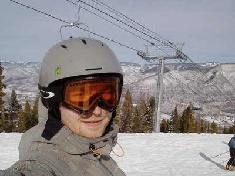

Seattle Snow :( Aspen Snow :D

Crazy January
Wow - the last couple of months have been crazy. First of all I had a conference in the beginning of december to prepare after last time I posted. This meant that I had to hang in there to get the presentation I had to give done. I managed to get everything together and the conference was a really good one.
More or less directly after the conference it was time for Xmas. A good break before the craziest january ever. What made the end of 2011 extra tough was besides work the job-application season for getting a 2012job. since I'm finishing my PhD this summer (more about this below) I have been applying for jobs this season. Hence, besides working I had to write and get some job applications out the door. I felt pretty prepared but in the end the took way more time than I expected. I managed to sent the bulk of the applications before christmas so I could take some days off. After new years eve I went back to Heidelberg, only to unpack, wash and re-pack my stuff.
To back my applications up I had planned an extensive trip to the US which included an AAS meeting, various talks and a conference on astronomical transients. I left early January and spent a bit over 3 weeks on the road. It was a great trip. During my stay in the US I uploaded pictures a couple of times so if you haven't checked them out yet you should. I was pretty lucky with my flights; I only had one severe delay which I consider luck since it probably should have been a cancellation. Flying out of Seattle when it has been snowing heavily (Seattle standards) is definitely not recommendable. At some point they cancelled all flights to California but for some reason our flight went under the radar and they gave us good to go. We walked onboard and got buckled up. Sitting there the problems started... and still we weren't sure if they would really let us go, but after fixing the door lock, de-icing once, getting stuck in the snow backing out from the gate, going back to the gate, letting people off, de-icing again we were finally ready to leave. And after 3 ours in the seat on the ground it was a relief to get out of there. But besides that everything went great.
Seattle airport with snow - not great... however Aspen, CO with snow - AWESOME ;) In the third week of my US trip I went to a winter conference in Aspen on astronomical Transients. The conference was great, but what stole the attention was the location. The lunch brakes from 11:00 to 16:30(!) gave us plenty of time to go skiing. I'm not even close to being an experienced skier but having borrowed gloves, jacket, pants and goggles from my brother (thanks bro!) I was ready for the white powder - and I had a great time. It was a bit pricy (but what one would expect in Aspen) but definitely worth it. I even came down a couple of black ones without falling, so I felt pretty tough - I probably looked like an idiot doing it but had great fun; and I didn't break anything so I'm happy. I came back to Germany in the end of january and after a week in DK last week I'm now back in HD full throttle.
As mentioned above I will finish my PhD this summer. Actually there is now a (still preliminary) date for my final defense. If everything goes as planned and I manage to find a committee which is available I will defend my thesis on July 9th. Hence, the next several months will be mostly focused on thesis-writing and getting all the documents and bureaucracy-stuff in place so I'm actually "allowed" to defend my thesis for the title of dr. rer. nat. as a Doctor of Science is called down here. Even though the defense is not public here in Germany you are of course all welcome to come celebrate with me if I succeed or cry with me if I fail.
Talk to you soon... if I can get my attention off the PhD-thesis-which-is-not-writing-itself.tex document in my work-library
cheers,
Kasper
Btw - I added a google-brag-map to my travel-page. I plan to post small hints, links, tips and goodies on each pin with time so the map is of some use besides just being there because I figured out how to do it ;)
Sunday, 19 February 2012
